Soy Jesus Avalos. Quiero saber que sistema tactico encaja de verdad con la seleccion de Ecuador en noviembre de 2026, con Marcelo Gallardo como entrenador, y por que. No quiero copiar un club famoso. Quiero mirar a mis jugadores, mirar lo que hicieron los grandes modelos recientes, y elegir con datos.
Ecuador llega a un momento de cambio. Enner Valencia se retiro de la seleccion el 1 de julio de 2026, con 109 partidos y 49 goles, como maximo goleador. Marcelo Gallardo es el entrenador desde septiembre de 2026, con contrato hasta el Mundial de 2030, y reemplazo a Sebastian Beccacece.
Si elijo mal el sistema, desperdicio a Moises Caicedo, que es el capitan y el eje, dejo solo a Willian Pacho en defensa, o pido a Jordy Caicedo una presion que no es su mejor virtud. Si elijo bien, el equipo protege a sus centrales, usa a sus extremos y pone a su delantero en forma cerca del area.
Moises Caicedo suma 67 partidos con la seleccion a los 25 anos, Angelo Preciado 63, Pervis Estupinan 60, Piero Hincapie 58, Gonzalo Plata 55 y Felix Torres 53, todos a 17 de noviembre de 2026, segun Wikipedia. Hernan Galindez tiene 39 anos y llega en forma, con 11 porterias a cero y un 74.0 por ciento de paradas en Huracan en 2026, segun Flashscore a 14 de noviembre de 2026.
El delantero en mejor forma es Jordy Caicedo, con 14 goles en 29 partidos de liga con Huracan en 2026. Kevin Rodriguez marco 10 goles en 31 partidos de liga con Union Saint-Gilloise en 2025-26.
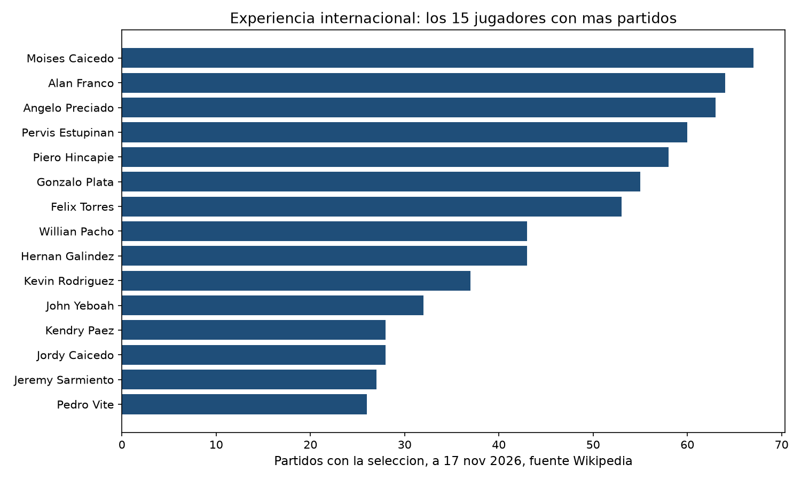
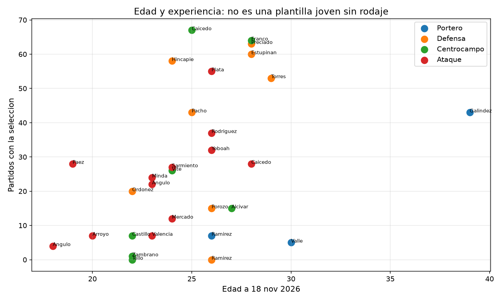
Hay dos avisos. Piero Hincapie solo jugo 67 minutos en la Premier League en 2026-27, con 0 titularidades en liga, aunque su total en el Arsenal en 2025-26 fue de 39 partidos y 2.763 minutos. Joel Ordonez tiene 0 minutos en 2026-27 por una fractura del quinto metatarsiano, con segunda cirugia el 25 de septiembre de 2026 y regreso previsto en enero de 2027.
En cinco partidos, Gallardo suma 2 victorias, 2 empates y 1 derrota, con 5 goles a favor y 4 en contra. La derrota fue 0-3 ante Corea del Sur. Las victorias fueron 2-0 ante Costa Rica el 13 de noviembre en Quito y 2-0 ante Bolivia el 17 de noviembre en Guayaquil. Los empates fueron ante Japon y Panama.
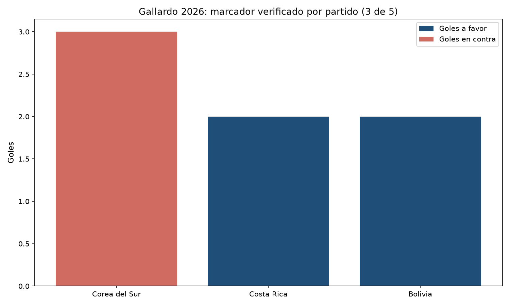
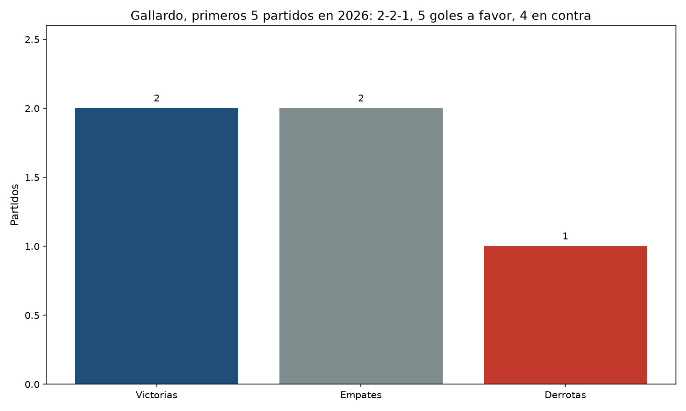
Kendry Paez si estaba en la convocatoria de 29. Estuvo en el banquillo ante Costa Rica, sin minutos. Tiene 28 partidos y 2 goles con la seleccion a 17 de noviembre de 2026. Leonardo Campana fue omitido, con 20 partidos y 1 gol, y su club no esta confirmado.
El Leverkusen de Alonso en 2023-24 gano la Bundesliga con 90 puntos, 28 victorias, 6 empates y 0 derrotas, 89 goles a favor y 24 en contra, con un 62.1 por ciento de posesion segun FBref, un xG de 75.23 y un xGA de 30.46. El PSG de Luis Enrique en 2024-25 gano la Ligue 1 con 84 puntos y la Champions League, con una final de 5-0 ante el Inter el 31 de mayo de 2025.
El Liverpool de Klopp en 2023-24 termino tercero con 82 puntos y 86 goles a favor. El Barcelona de Xavi en 2023-24 termino segundo con 85 puntos. El Chelsea de Maresca en 2024-25 termino cuarto con 69 puntos y gano la Conference League y el Mundial de Clubes.
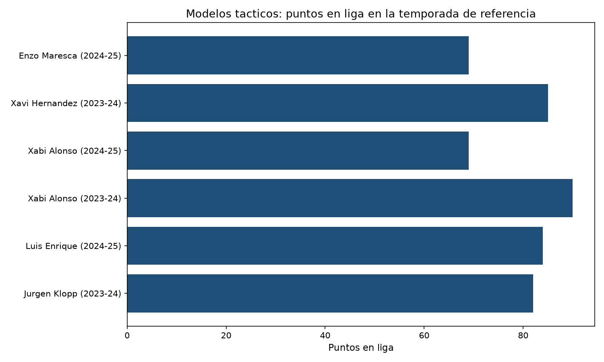
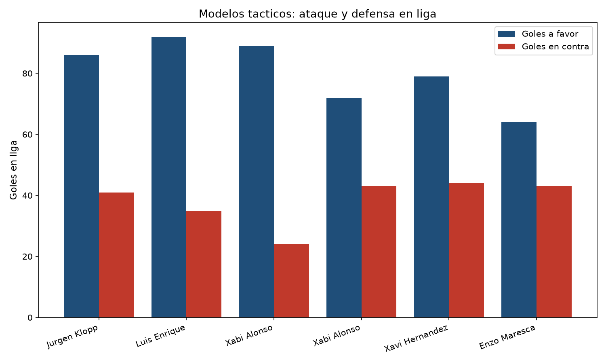
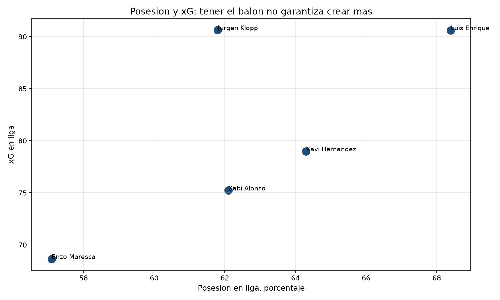
| Sistema | Media de ajuste, 1 a 5 |
|---|---|
| 4-2-3-1 | 4.29 |
| 3-4-2-1 | 3.71 |
| 4-3-3 | 3.29 |
El 4-2-3-1 gana porque usa el doble pivote Caicedo y Franco, protege a los centrales, deja a Plata y a Sarmiento en banda, y pone a Vite o a Paez detras de un delantero en forma. El 3-4-2-1 puntua mas en laterales y en mediapunta, pero pide un tercer central en forma que Ecuador no tiene en noviembre.
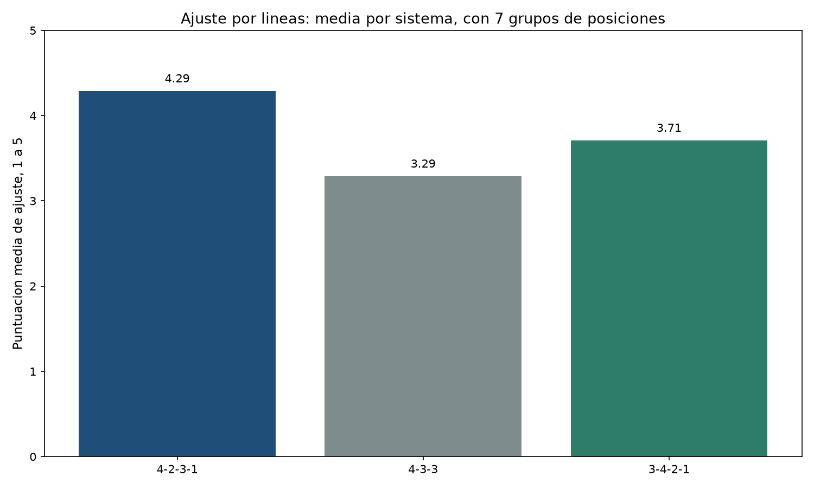
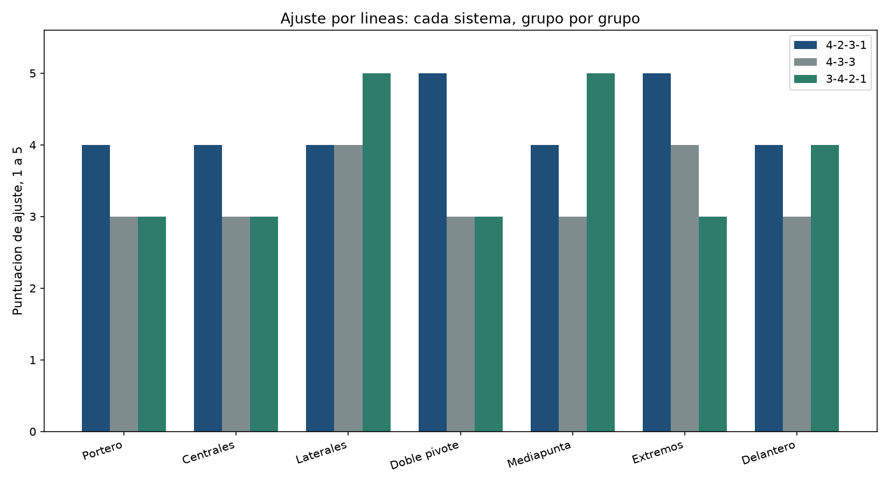
Mi once es Galindez, Hurtado, Torres, Pacho, Estupinan, Caicedo, Franco, Plata, Vite, Sarmiento y Jordy Caicedo. El capitan es Moises Caicedo. Correccion del 18 de noviembre de 2026: Hurtado entra por Preciado, que pasa a ser tercera opcion detras de Hurtado y de Jhon Espinoza.
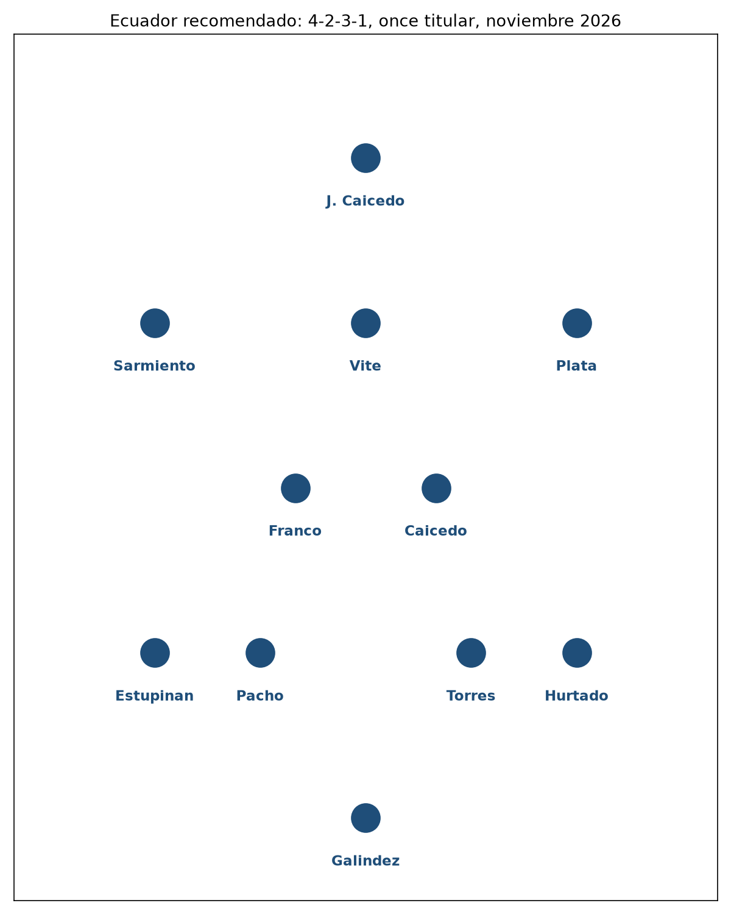
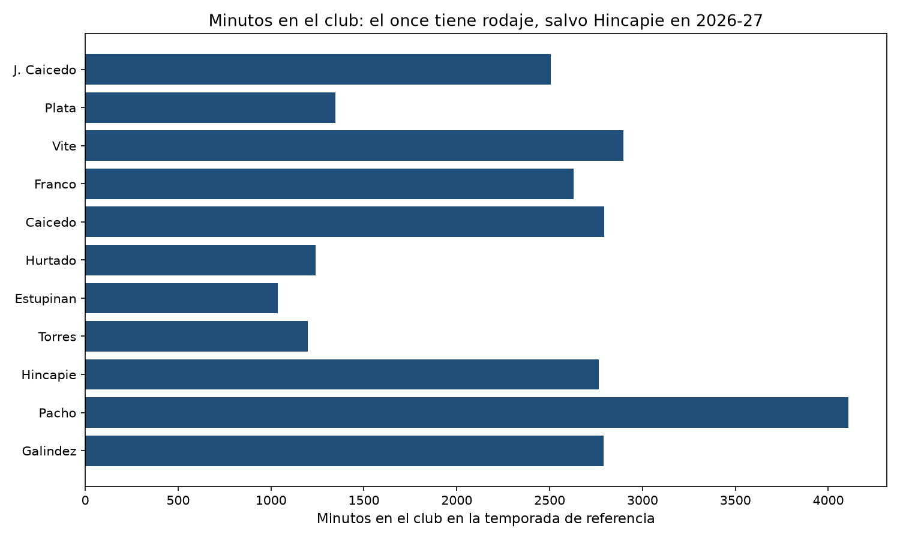
Elijo a Torres por delante de Hincapie por minutos recientes, y a Jordy Caicedo por delante de Kevin Rodriguez por forma en el club. En posesion, el equipo pasa a un 3-2-5. Sin balon, el bloque es medio, en 4-4-2, con Vite al lado de Jordy Caicedo. Caicedo y Franco no salen los dos a la vez. Uno presiona y el otro cubre.
En balon parado no tengo porcentajes verificados para ningun modelo, asi que no presento ninguno. Lo que si se puede decir con los datos es quien remata: Torres tiene 5 goles con la seleccion, Pacho 2, Hincapie 3 y Estupinan 5.
Si Ecuador va perdiendo por un gol despues del minuto 60, paso al 3-4-2-1, con Hincapie como tercer central y con Plata y Paez como mediapuntas detras de Jordy Caicedo. Si va ganando por un gol despues del minuto 75, cierro en 4-4-2, con Alcivar o Castillo para tener un tercer mediocentro. Si el partido esta empatado despues del minuto 70, no cambio el sistema, cambio a los jugadores: Paez por Vite y Mercado por Sarmiento.
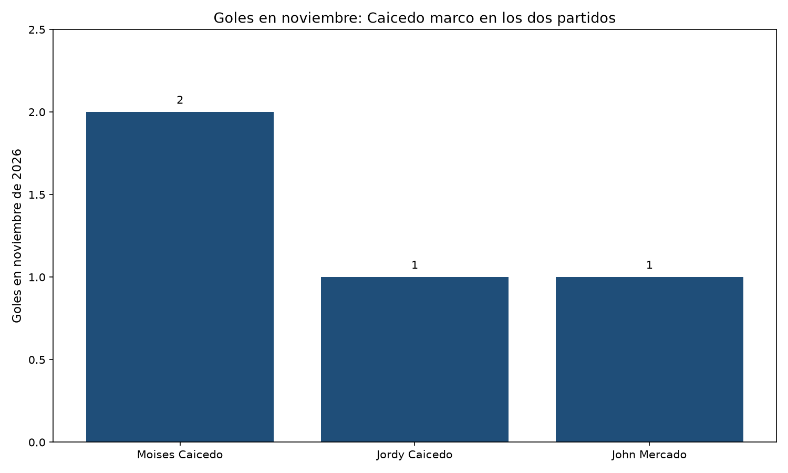
La alternativa en 3-4-2-1 es Galindez, Torres, Pacho y Hincapie, Ramirez y Estupinan como carrileros, Caicedo y Franco en el centro, Plata y Paez como mediapuntas, y Jordy Caicedo arriba. Es alternativa, no plan principal, porque pide tres centrales en forma y no tiene extremos puros. Ramirez es el mejor carrilero por datos, con 2,064 minutos y 2 goles y 3 asistencias en MLS 2026.
Jesus me corrigio con razon. Preciado no juega en Europa. Juega en Atletico Mineiro, en Brasil, no siempre es titular y su nivel ha bajado. En Sparta Praga en 2025 tenia 1 gol y 7 asistencias en 23 partidos. En Serie A 2026 con Atletico Mineiro tiene 0 goles y 2 asistencias en 27 partidos, segun Ceroacero. Las asistencias por partido cayeron de 0.30 a 0.07. El titular en su club es Natanael, y Preciado entro en el minuto 69 ante Santos, no jugo ante Cruzeiro y Gremio, y jugo 1 minuto ante Gremio el 7 de noviembre.
Top 3: 1. Jose Hurtado, Red Bull Bragantino, 17 partidos, 14 titularidades, 1,241 minutos, 1 gol, en Serie A Brasil. 2. Bryan Ramirez, FC Cincinnati, 30 partidos, 21 titularidades, 2,064 minutos, 2 goles y 3 asistencias, en MLS. 3. Jhon Espinoza, Independiente del Valle, 17 partidos, 17 titularidades, 1,444 minutos, 1 asistencia, en LigaPro. Hurtado es el mejor para el 4-2-3-1. Ramirez es el mejor para el 3-4-2-1, como carrilero. Alan Franco es la emergencia dentro del partido, como lateral adaptado. Joel Ordonez tiene 0 minutos por lesion, con regreso previsto en enero de 2027, y no entra ahora.
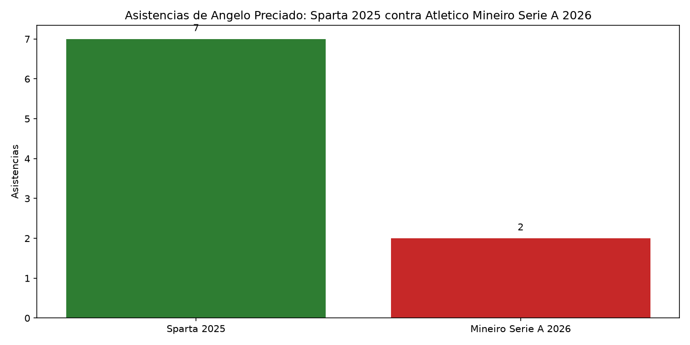
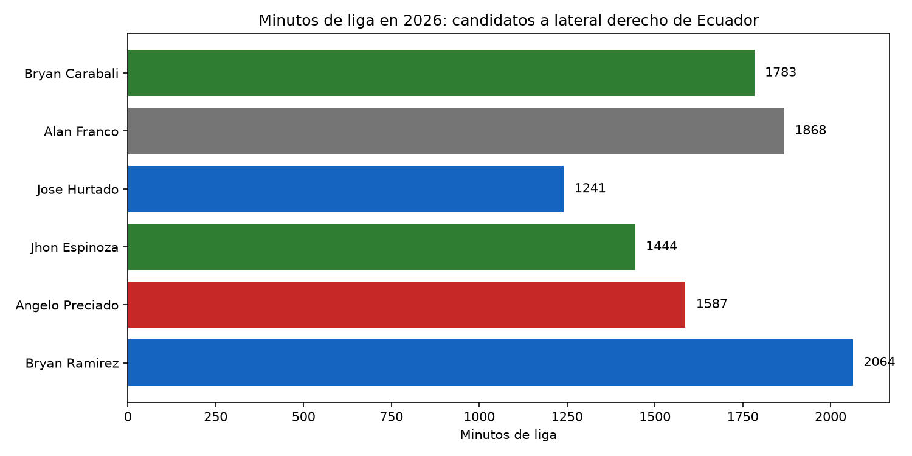
El pool ampliado tiene 46 nombres, en data/pool_ampliado_2026.csv, por ligas: LigaPro, MLS, Mexico, Argentina, Brasil, Belgica, Inglaterra, Francia, Italia, Dinamarca, Grecia, Chequia, Rusia y Espana Segunda Division, mas la Sub-20. Portugal y Paises Bajos quedan como huecos, sin un nombre verificado en este chequeo.
La muestra de Gallardo es pequena, solo 5 partidos. No tengo datos de eventos completos para todos los jugadores en una sola fuente gratuita. Las estadisticas de club no se trasladan una a una a la seleccion. El ajuste tactico es una recomendacion, no una prediccion.
Kendry Paez si estaba en la convocatoria. Jordy Caicedo tiene 5 goles segun la pagina de plantilla y 6 segun su pagina individual, sin resolver. El club de Leonardo Campana tiene una contradiccion sin resolver. La convocatoria anunciada era de 29 jugadores, pero los nombres aportados suman 30, sin resolver. El PPDA no es comparable entre fuentes. Los porcentajes de balon parado no estan verificados para ningun modelo. El 4-2-3-1 de noviembre era proyectado, no confirmado, porque Global Sports Archive registro un 4-2-2-2 ante Costa Rica. Los minutos de Preciado en Serie A difieren entre fuentes, 1,587 segun Ceroacero y unos 900 segun FotMob y SoFIFA. Los minutos de Daykol Romero no estan verificados.
Proyecto publicado en GitHub, con story site en vivo. Datos en data/, con procedencia en data/PROVENANCE.md. Cuadernos en notebooks/, del 01 al 07.